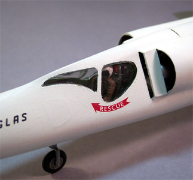

{kind=link}


Lindberg 1/48 Scale Douglas X-3 Stiletto
Kit #71426 MSRP $11.25
Model, images and text Copyright � 2004 by Matt Swan
Developmental background
In October 1952 news reporters were treated with a view of the future. Douglas unveiled their new X-3 High Speed Research aircraft nick named the Stiletto. If their philosophy of form follows function were to hold true this was going to be one fast aircraft. Looking at it is difficult to believe that this airplane wasn't fast. The slender, needle-nosed, trapezoidal-winged airplane looked like it was made for speed...and, indeed, it was. Douglas had designed it to study high-speed aerodynamic phenomenon at sustained speeds of up to Mach 2 and to examine the feasibility employing extremely thin, short-span, low aspect ratio wings on high-performance aircraft. A secondary mission was to investigate the use of new materials such as titanium and to explore new construction techniques.
The X-3 was a radical departure from the X-1 series and the X-2. Built by Douglas Aircraft, the X-3 was jet powered and used conventional take-off and landing methods instead of being drop launched from a mother ship such as a B-29 or B-52. Engine development difficulties forced the use of lower powered engines than originally planned, prohibiting the X-3 program from achieving its design potential. However, data gained from the X-3 program was of great benefit in the development of the F-104, X-15, SR-71 and other high performance aircraft. Two X-3's were ordered but due to limited funding, lack of performance and on-going engine difficulties, only one (USAF S# 49-2892) was completed for flight, while the second (USAF S#49-2892) was used for spare parts.
The X-3 made its first test flight at Edwards AFB, California on October 20, 1952 and made its first supersonic flight in June 1953. It was only able to exceed Mach 1 while in a steep dive. Following completion of contractor testing in 1953 and a brief Air Force evaluation in 1953-54 the X-3 was transferred to the National Advisory Committee for Aeronautics, with research pilot Joseph A. Walker of the High-Speed Flight Station (later: Dryden Flight Research Center) flying all 20 of its NACA research flights from 1954 to 1956. Though a performance failure, the plane helped advance titanium fabrication, and other design techniques that were later applied to more successful aircraft designs. The X-3's most significant contribution to aircraft design may have been in the field of aircraft landing gear, namely the tires. Because the X-3 had to achieve high speeds to create and maintain lift, take-off and landing speeds (260mph for take-off, 200mph for landing) it was common for the tires to come apart. Several aircraft tire manufactures studied these samples when developing new tires for high-speed military applications. Another result of the flight-testing was to help the aeronautics community understand how to deal with the phenomenon of inertial coupling.
While it failed to achieve many of its stated objectives, the Air Force-NACA X-3 research program paid unexpected and very handsome dividends in aircraft design/production and tire/landing gear development. The X-3 was one of the most difficult to fly X planes in history, required three miles to take off but its exotic design makes it one of the most visually appealing X-planes ever built. The X-3 was entered via a mechanically lowered hatch, in the bottom of the fuselage, which also lowered the pilot's seat. A push of a button raised the seat up into the cockpit and made the hatch flush with the bottom of the fuselage.
The X-3 pilots were William Bridgeman (Douglas Aircraft test pilot), Lt. Col. Frank Everest, Joseph Walker and Chuck Yeager. In 1956 the X-3 was transferred to the U.S. Air Force Museum in Dayton Ohio where it still resides for future generations to marvel at.
The Kit
This really is a dog of a kit. Lindberg couldn�t even spell the name correctly and this after multiple reissues over nearly thirty years. Come on guys, get a clue. Originally the kit was issued with a �build it yourself� battery powered motor and advertised as a motorized kit. That always kind of puzzled me as to just how a jet model kit would be �motorized� and it apparently puzzled them as well for all future releases did not include that motor. It has a decent exterior resemblance to an X-3 but most of the interior pieces just need to be tossed. You get one tree of parts with most of the smaller pieces attached, the main fuselage halves and two sides of the engine core are separate. There is also one sprue of clear parts that can be assembled into a stand and two cockpit windowpanes. There is one remaining piece in the box, a short steel shaft that is intended to act as a support for the aft end if you build it sitting on its gear. The plastic pieces are molded in a hard white plastic with lightly raised details and engraved lines for the control surfaces. The wings and fuselage are covered with little tiny raised rivets, which will definitely have to go.
The general exterior dimensions certainly look like an X-3 and the landing gear and doors look fairly good but once you take a look at the interior assemblies the story changes. The pilot figure more resembles a slightly melted lump of wax than a human figure, the two-piece seat is nearly as bad. There is no interior-separating bulkhead between the cockpit and the engine bay and no other cockpit details such as wheel, dash or side panels. The engines are horribly out of scale, the only reason to retain them is to act as a mounting piece for the front compressor blades. The exhaust cones are about two inches short of the rear of the engine chambers and probably should be relocated during construction. Lastly, there is this strange little door thing on top of the fuselage to show off the engines. I think this was originally intended to give access to a battery compartment for that original electric motor.
In this kit you get twenty-seven white injection molded pieces, six clear parts and one metal aft support strut. Of these thirty-four total pieces only twenty-three of them are worth hanging on to.
Decals and Instructions
The decal package is fairly brief, the aircraft had no wing markings so you have only two �Stars and Bars� for the fuselage, the photo reference crosses for the fuselage and a few other markings. They are printed well with good color density, print registry and proper thinness. They react well to setting solution and gave me no trouble at all. The instructions are a two-page foldout with no historical information included. In fact, the entire first page is pretty much wasted with some very brief warnings repeated in a plethora of languages. The next two pages include seven exploded view construction steps that cover the basics need to build the model and include some color call-outs. The last page contains a three-view for decal placement as well as a color code chart that include some Federal Standard numbers for a few of the colors.
Construction
The first thing that you have to do with this kit is throw away that awful pilot and ejection seat. I hauled out the spare parts box and cannibalized an ejection seat and pilot from an old Dragonfly kit. I know this is not entirely accurate for the aircraft but it�s a heck of a lot better than the kit offering. I also scavenged some side panels from another old jet model and trimmed them to fit inside the cockpit. I cut a bulkhead out of a sheet of stock plastic card and trimmed it to become a bulkhead behind the pilot and separating the engine compartment. An old dashboard was fitted in with a glare shield made from stock plastic and a control wheel was found in the spares box to complete the interior. Those huge side windows work out pretty well for this because you can actually see some of the stuff I crammed in here. A variety of lead fishing weights and modeling clay were packed into the nose cone and dry fit several times until the nose would sit on the ground while the kit was taped together.
The basic interior was painted with Model Master Zinc Chromate Green and washed with a sludge wash. I assembled the engine pieces and included the top access hatch with its hinge just for shits and grins (this was a casual build). The clear cockpit panels were Futured, masked and installed with Testors Clear Parts cement. The hole in the belly of the fuselage intended for the stand mount was filled with Squadron White putty and sanded smooth prior to painting.

The overall paint job is Testors flat white enamel cut 30% with lacquer thinner. The wings were done with Model Master Steel and then the entire model was Futured for decaling. The decals behaved just perfectly sliding on easily and reacting well with both Micro-Set and Micro-Sol. While they were drying down I used a mechanical pencil to darken the engraved lines on the control surfaces. Twenty-four hours later the model was coated with Testors Dull Coat. Now this is a lacquer-based product and I don�t normally use it because of potential problems with decals and underlying paints but if done in light coats with about five minutes between coats you can get away with it. I had some I needed to get rid of anyway. After a suitable drying time I came back and coated only the wings with Future floor polish using a wide soft brush.
Conclusions
I guess I�ve said a lot of really negative things so far about this kit in general but if you want to build a 1/48 scale X-3 this is the only game in town. I don�t understand why the mainstream producers have not done a decent kit of this aircraft. It is a good place to start but a fully stocked spares box is necessary. I did not go �all out� with the detailing or trying to be perfect about replication. In fact, the same curse that caused Lindberg to misspell �Stiletto� hit me during the decal phase and I ended up reversing the rescue markings and did not realize my error until it was too late and everything was sealed down.
This is indeed a cheap kit. Although it lists for $11.25 I picked mine up on Ebay for a whopping $5.85 and since I bid on it after winning another auction from the same seller I did not get hit with any more than a buck or two for shipping so for that price you can have a little fun.